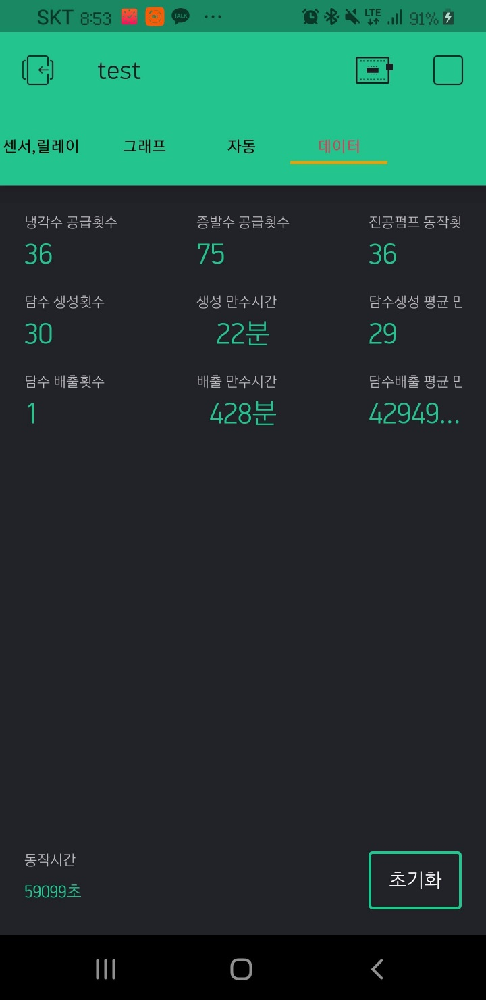

운영 기준 정리
High-Q ERP 도입 실무
데이터 정리, 이관, 사용자 업무 기준 정리까지 맡았습니다. 새 시스템을 도입할 때 중요한 것은 기능보다 기준, 권한, 기록이라는 점을 경험했습니다.
ERP데이터 이관사용자 기준
자동화, IT 자산, 시스템 운영, 근무환경 지원을 분리하지 않습니다. 구성원이 막히는 지점을 확인하고, 반복 문제가 줄어들도록 기준과 기록을 남깁니다.
 ERP 운영 전환
ERP 운영 전환 Unity·VR/AR 학습 증거
Unity·VR/AR 학습 증거엔엑스쓰리게임즈 IT 인프라 담당자에게 필요한 업무는 장비 관리 하나가 아니라, 요청·자산·시스템·업체·근무환경을 한 흐름으로 묶어 운영하는 일입니다.
계약, 검수, 정산, 증빙 흐름을 기준화해 예산 집행 누락을 줄였습니다.
복합기, 전자계약, 네트워크, 소방·전기 등 외주업체 요청과 일정을 관리했습니다.
High-Q 도입 실무, 데이터 이관, 사용자 업무 기준 정리를 맡았습니다.
AR 시스템제어 과정에서 게임형 인터랙션과 VR/AR 콘텐츠를 제작했습니다.
웹 포트폴리오는 PDF보다 자유롭게 증거를 보여줄 수 있습니다. ERP, IoT 장비, 센서 로그, Unity·VR/AR 수상 경험을 한 화면에서 연결했습니다.

엑셀 중심의 업무를 시스템 기준으로 옮기며 데이터와 사용자 기준을 정리했습니다.

ESP32·센서·앱 연동 경험으로 장비 이슈를 소프트웨어 흐름과 함께 봅니다.

센서 데이터와 상태 변화를 그래프로 확인하고, 테스트 결과를 공유했습니다.

프로토타입 장비 제어와 테스트 경험은 인프라 장애 원인 파악 감각으로 이어집니다.
게임사 근무 경험은 없지만, 개발 조직을 지원하는 내부 인프라 업무와 맞닿은 경험은 분명합니다.
데이터 정리, 이관, 사용자 업무 기준 정리까지 맡았습니다. 새 시스템을 도입할 때 중요한 것은 기능보다 기준, 권한, 기록이라는 점을 경험했습니다.

ESP32 기반 장비 제어와 앱 연동 테스트를 수행했습니다. 개발자 요청을 단순 민원이 아니라 장비, 로그, UI 흐름이 연결된 문제로 이해할 수 있습니다.
한국폴리텍 AR 시스템제어 과정에서 Unity 기반 게임형 인터랙션과 VR/AR 콘텐츠를 제작했습니다. 게임 개발 실무 경력은 아니지만, 개발 환경의 언어를 이해하는 기반입니다.
강점은 전면에 두고, 제한적인 경험은 과장하지 않고 적응 계획으로 분리했습니다.
반복 문서, 비교표, HTML/PDF 산출 흐름을 직접 구성했습니다. 자동화는 기존 기준을 무너뜨리지 않고 누락을 줄이는 방식으로 적용합니다.
PC·SW·라이선스·계정·외주 유지보수 현황을 정리하고, 유휴 장비 재배치와 사용자 문의 대응을 수행했습니다.
ERP 도입, 입찰, 계약, 정산, 자산 현황을 문서·목록 기준으로 남기는 방식에 익숙합니다.
계정·권한·계약·개인정보가 포함된 요청은 담당자 확인과 처리 이력 기준으로 관리했습니다.
Unity 기반 게임·VR/AR 콘텐츠, ESP32 장비 제어, UI/UX QA 경험을 보유했습니다.
첫 달은 크게 바꾸지 않습니다. 먼저 목록화하고, 기준을 확인하고, 반복되는 문제부터 줄이겠습니다.
자산, 계정, 라이선스, 유지보수 업체, 장애 접수 흐름을 먼저 목록화합니다.
자주 반복되는 문의, 담당자 확인이 필요한 요청, 보안 기준이 필요한 요청을 분리합니다.
누락이 많은 현황표와 반복 안내부터 템플릿, 체크리스트, 간단한 자동화로 바꿉니다.
처리 이력과 반복 문의 데이터를 기준으로 자산·계정·업체 운영 흐름을 개선합니다.
엔엑스쓰리게임즈의 IT 인프라 담당자는 개발 조직의 속도를 지키는 자리라고 봅니다. 저는 기술과 운영 사이에서 요청을 정리하고, 기록을 남기고, 같은 문제가 반복되지 않게 만드는 방식으로 일해왔습니다.